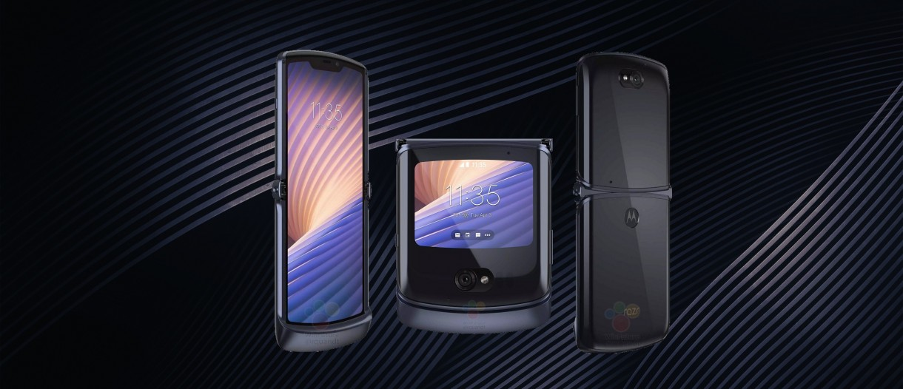

BODY
Dimensions-165.1 x 76.4 x 9.3 mm (6.5 x 3.01 x 0.37 in)
Weight-218 g (7.69 oz)
Build-Glass front (Gorilla Glass 5), glass back (Gorilla Glass 5), aluminum frame
SIM Dual SIM (Nano-SIM, dual stand-by)
BODY
Dimensions Unfolded: 159.2 x 128.2 x 6.9 mm
Folded: 159.2 x 68 x 16.8 mm
Weight: 282 g (9.95 oz)
Build Glass front (folded), plastic front (unfolded), glass back, aluminum frame
BODY
Dimensions-160.8 x 78.1 x 7.4 mm (6.33 x 3.07 x 0.29 in)
Weight-228 g (8.04 oz)
Build Glass front (Gorilla Glass), glass back (Gorilla Glass), stainless steel frame
SIM Single SIM (Nano-SIM and/or eSIM) or Dual SIM (Nano-SIM, dual stand-by) - for China
IP68 dust/water resistant (up to 6m for 30 mins)
Apple Pay (Visa, MasterCard, AMEX certified)
PLATFORM
OS-iOS 14.1, upgradable to iOS 14.4
Chipset-Apple A14 Bionic (5 nm)
CPU Hexa-core (2x3.1 GHz Firestorm + 4x1.8 GHz Icestorm)
GPU Apple GPU (4-core graphics)
BODY
Dimensions 165.3 x 74.4 x 8.5 mm (6.51 x 2.93 x 0.33 in)
Weight 199 g (7.02 oz)
Build Glass front (Gorilla Glass 5), glass back (Gorilla Glass 5), aluminum frame
SIM Dual SIM (Nano-SIM, dual stand-by)
IP68 dust/water resistant
MAIN CAMERA
Quad 48 MP, f/1.8, 25mm (wide), 1/1.43", 1.12µm, omnidirectional PDAF, Laser AF, OIS
8 MP, f/2.4, (telephoto), 1/1.0µm, PDAF, OIS, 3x optical zoom
48 MP, f/2.2, 14mm, 116˚ (ultrawide), 1/2.0", 0.8µm, PDAF
5 MP, f/2.4, (Color filter camera)
Features Dual-LED flash, HDR, panorama
Video 4K@30/60fps, 1080p@30/60/240fps, Auto HDR, gyro-EIS
SELFIE CAMERA Single 16 MP, f/2.5, (wide), 1/3.06", 1.0µm
Features Auto-HDR
Video 1080p@30fps, gyro-EIS
SOUND
Loudspeaker-Yes, with stereo speakers
3.5mm jack-No
Motorola Razr 5G

MAIN CAMERA
Single-48 MP, f/1.7, 26mm (wide), 1/2.0", 0.8µm, PDAF, OIS
Features-Dual-LED dual-tone flash, auto HDR, panorama
Video-4K@30fps, 1080p@30/60/120fps, gyro-EIS
MEMORY
Card slot-No
Internal-256GB 8GB RAM
BODY
Dimensions Unfolded: 169.2 x 72.6 x 7.9 mm
Folded: 91.7 x 72.6 x 16 mm
Weight: 192 g (6.77 oz)
Build Plastic front (opened), glass front (closed, Gorilla Glass 5), glass back (Gorilla Glass 5), aluminum frame (7000 series), hinge (stainless steel)
SIM Nano-SIM and/or eSIM
Water-repellent coating